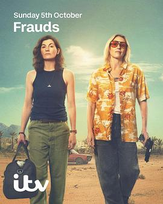

8.5
最后一票
Frauds
2025
英国
评分 8.5
导演:
朱莉娅·甘迪尼 / 布赖恩·奥马利
演员:
苏兰·琼斯 / 朱迪·惠特克 / 伊丽莎白·贝林顿 / 凯特·弗利特伍德 / 阿卜杜勒·萨利斯 / 卡兰·吉尔 / 李·布罗德曼
类型:
剧情,惊悚,犯罪
剧情简介
在西班牙炽烈的阳光下，两位早已淡出江湖的老盗贼迎来了命运的尾声。伯特（苏兰·琼斯饰）十年前因盗窃案入狱，如今身患重病，重获自由。她不愿带着遗憾离开，心中仍燃着那点不灭的火花。萨姆（朱迪·惠特克饰）则早已洗手，从伦敦街头的神偷变成西班牙小村的旅馆老板，靠平静日子抵消过往的罪孽。伯特找到她，说服她再做一次——一次“无害”的盗窃，只为偷走一幅挂在私人庄园中的萨尔瓦多·达利画作。据说这幅画背后藏着一段尚未被揭开的艺术丑闻。她们策划行动的过程充满了昔日默契与现实摩擦：老派手法与新科技对抗，复仇与救赎的界线逐渐模糊。剧集在明亮的地中海色彩下描绘出暮年盗贼的浪漫与孤独。阳光下的橄榄园、废弃公路、荒凉的别墅都成为记忆的投影。伯特的笑容倔强而脆弱，萨姆的犹豫中藏着未曾熄灭的热血。她们既在偷画，也在偷回自己的人生。《最后一票》以犯罪为壳，情感为核。它讲的不只是盗窃，而是关于衰老、友情与尊严的故事。当最后的行动失控，一切被迫面对现实，观众才发现——这场盗窃并非为了金钱，而是一种体面的告别。导演以极具张力的镜头语言，将悬疑节奏与女性情谊交织，打造出一部既有犯罪刺激又满含诗意的惊悚剧。